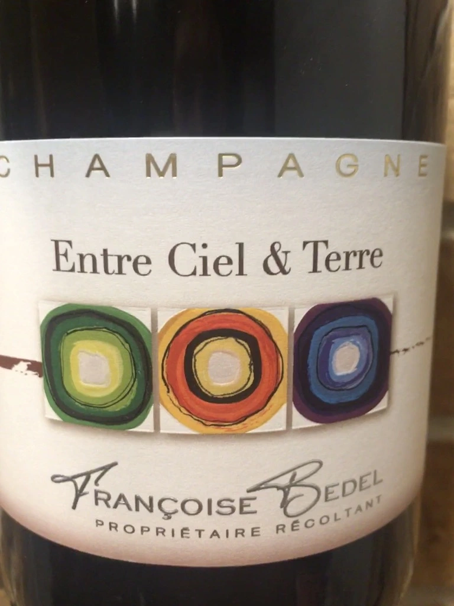

- Type
- White Sparkling, Extra brut
- Producer
- Francoise Bedel
- Vintage
- NV
- Location
- France, Champagne AOC
- Grapes
- Pinot Meunier, Pinot Noir
- Alcohol
- 12.5
- Sugar
- 4.8
- Price
- 2336 UAH, 2042 UAH
- Cellar
- N/A
Producer
Wonderful winemaker from Champagne.
According to her interview with Goodwine, she believes that wine making requires intervention from people. There is critical difference between Low Intervention and no intervention at all.
На мой взгляд, совсем не вмешиваться в процесс производства опасно. Человек необходим, чтобы вино не стало уксусом. Я никогда не добавлю сульфитов больше, чем нужно, или не стану добавлять их вовсе, если винтаж мне это позволит. Вино должно быть понятным в плане чистоты вкуса, внешнего вида и ароматов. Я говорю сейчас о Шампани. Не знаю, как в других регионах, а у нас погодные условия таковы, что здесь не получится не прикасаться к вину, если вы хотите сделать что-то хорошее. К тому же, я глубоко убеждена, что лозы находяться в энергетической взаимосвязи с тем, кто за ними смотрит, поэтому нет ничего страшного в том, что человек вмешивается в процесс производства. Даже наоборот.
Один мой импортер из северных страх однажды сказал мне, что предпочитает продавать только натуральные вина. Вечером мы пошли в ресторан, сделали заказ и выбрали натуральное вино. Нам принесли напиток коричневого цвета, с очень странным и неприятным запахом. Если натурально вино такое, я не хочу быть натуралистом. Во время сбора урожая я ставлю бокал с виноградным соком на бочку и смотрю каждый час, как меняется цвет. Если сок остается светлым, мы добавим меньше сульфитов, если начнет темнеть - добавим больше. Я не отношусь к виноделам-экстремистам, которые ничего не делают.
Guilde to Goodwine #38
Ratings
2020-08-30 - 8.50
Complex, deep and refreshing Champagne. Sunflower oil, flowers, baked apples, lemon tart and plastic. Very good mousse, perfect refreshing body with very long finish, flavours of baked apples and sunflower seeds. This was very tasty! I really wonder how it plays after some aging.
2021-01-25 - 8.50
Intense, profound and expressive. Ripe apple, brioche, vanilla eclair, oil, barberry candy, flowers. Perfectly balanced, flavourful and oily with bakery hints. Long aftertaste. My second try and second success.
2021-08-17 - 8.50
Wonderful Bedel-style. Oxidative, but more delicate that Origin’elle. Baked apples, flowers, oil, lemon tart, Jerez. Delicious, balanced and sophisticated. Despite complexity remains friendly and approachable.
Tasted after Divych Vechir event.